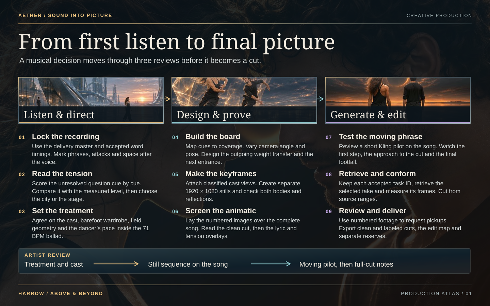
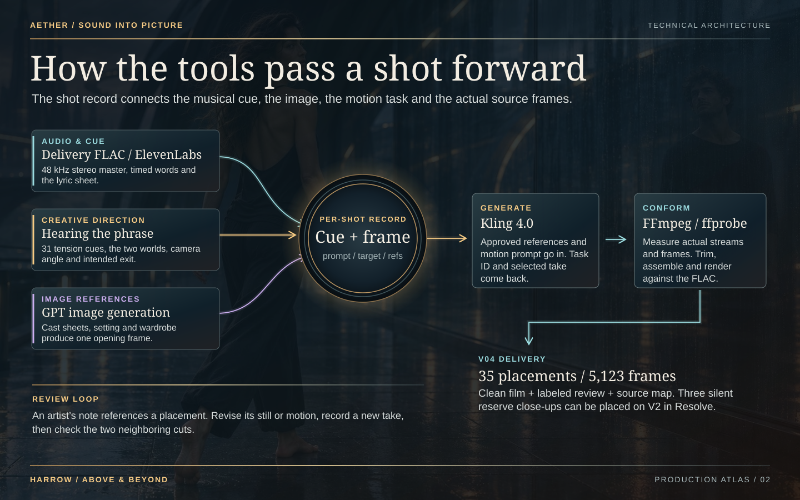
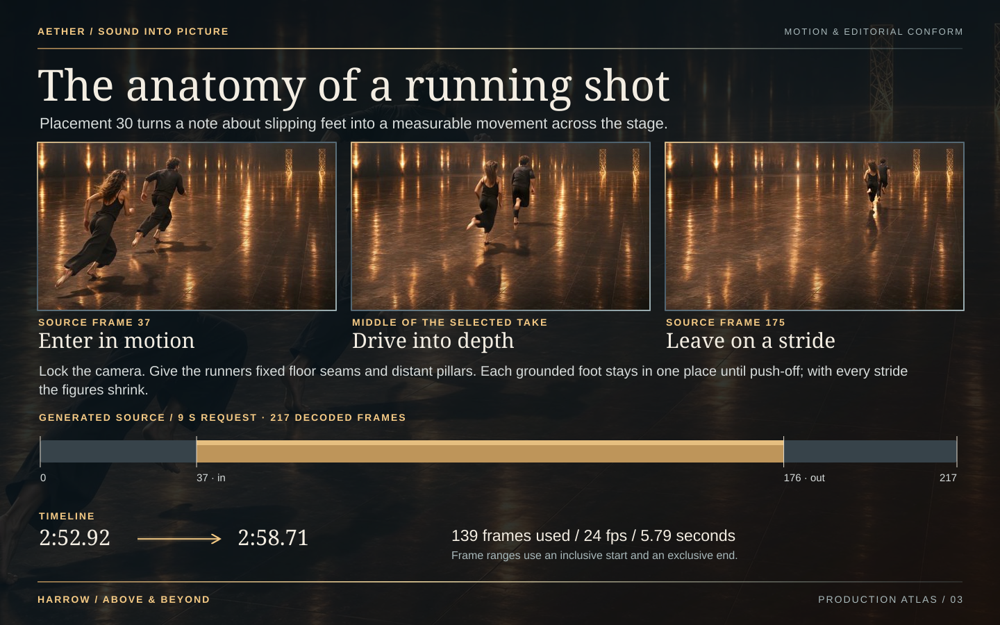
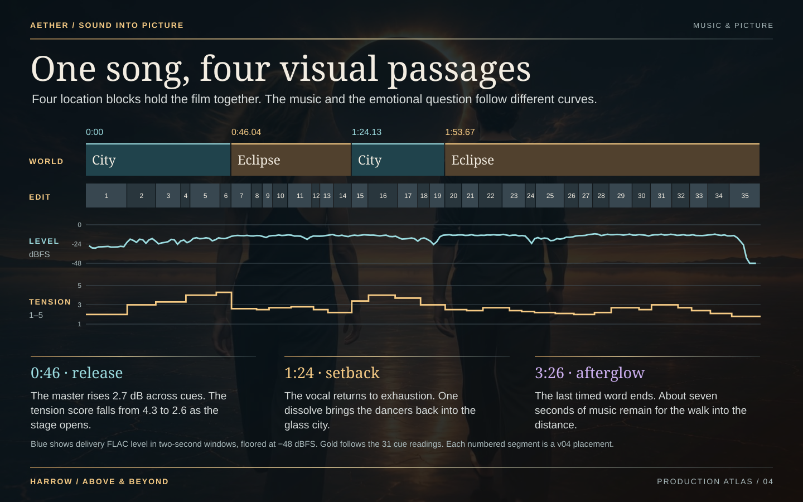

From first listen to final picture

Open full size · Download vector diagram

Read the diagram as text
Lock the song and timings. Read pressure and release before designing the stills. Choose how the cast and locations carry the emotional changes.
Plan each angle, generate cast-matched opening frames, and screen a full-song still animatic with the lyrics and tension map.
After the approved pilot, track each motion task, inspect its returned frames, cut to the master and deliver the numbered review and edit map.
How the tools pass a shot forward

Open full size · Download vector diagram

Read the diagram as text
The FLAC and ElevenLabs word intervals locate the musical event. The director’s interpretation and continuity references supply the shot’s purpose and physical constraints.
GPT image generation produces the opening frame. The shot record binds it to the cue, reference roles, motion prompt and required duration. Kling 4.0 returns an identifiable motion take.
FFprobe checks the streams and frame count. FFmpeg conforms the take to the editorial map against the FLAC. Resolve can place separate reserve clips over that clean master.
The anatomy of a running shot

Open full size · Download vector diagram

Read the diagram as text
The wide camera stays fixed. Seams and pillars give the audience a stable way to see push-off and forward travel.
The nine-second request returned 217 frames. The edit uses source frames 37 through 175 inclusive. At 24 fps the selected 139 frames last 5.79 seconds.
The placement occupies timeline frames 4150–4289, end exclusive. An editor can change the trim using the remaining source frames.
One song, four visual passages

Open full size · Download vector diagram

Read the diagram as text
The first 46 seconds belong to the city. The eclipse stage opens at frame 1105, the city returns at 2019, and the final stage block starts at 2728.
All 35 picture placements share one time axis with the FLAC level trace and the 31 dramatic tension readings. The chorus can get louder as the emotional pressure releases.
The final word ends at 3:26.40. The camera keeps watching the two figures through the remaining music.